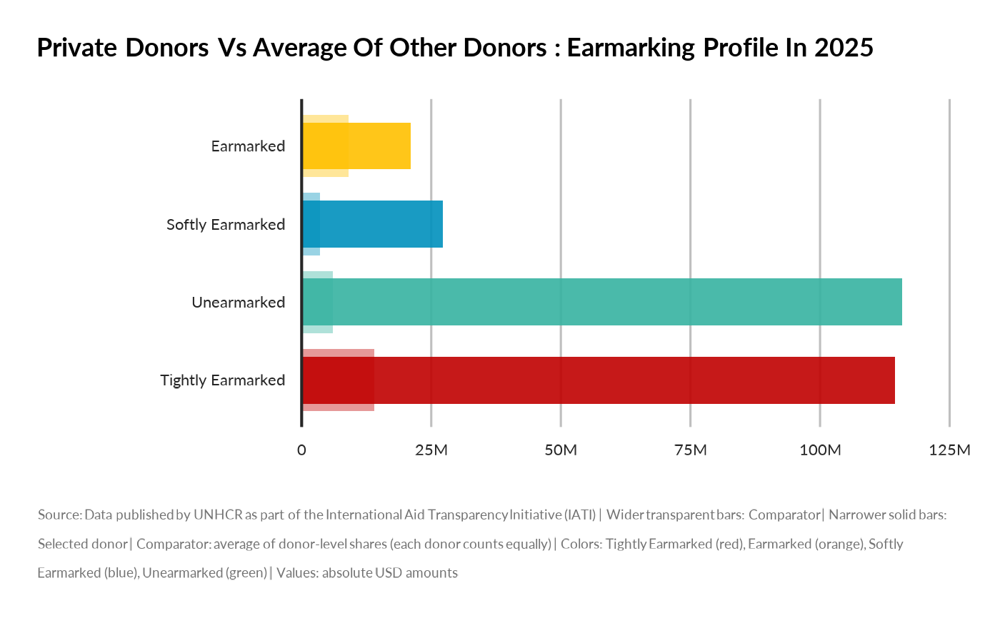
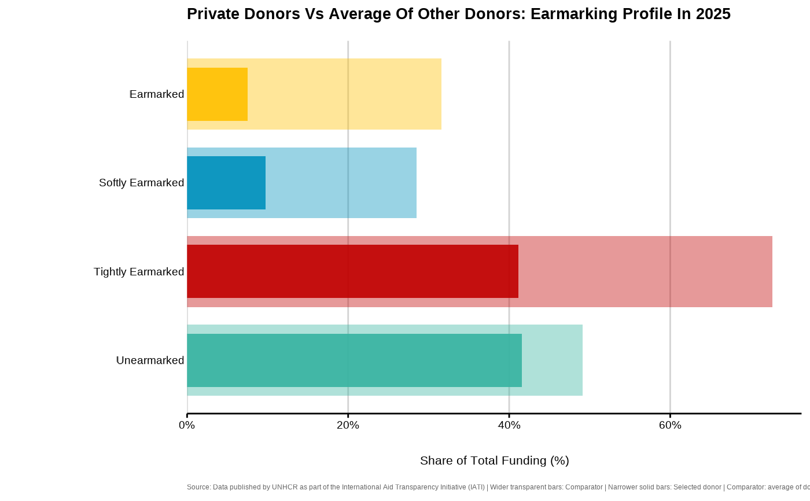
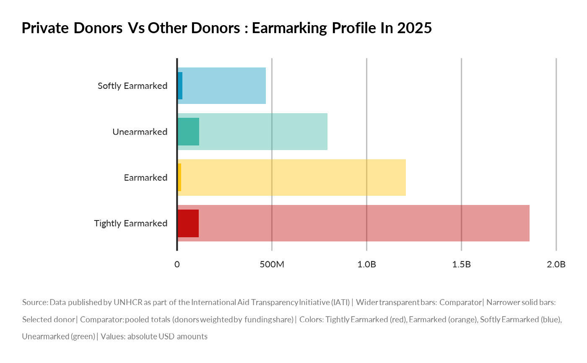
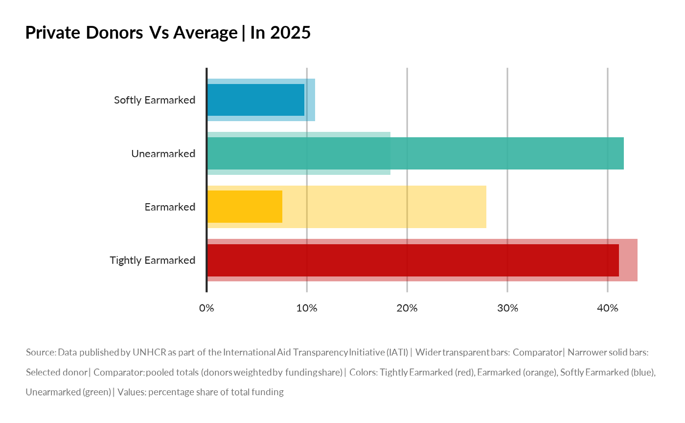
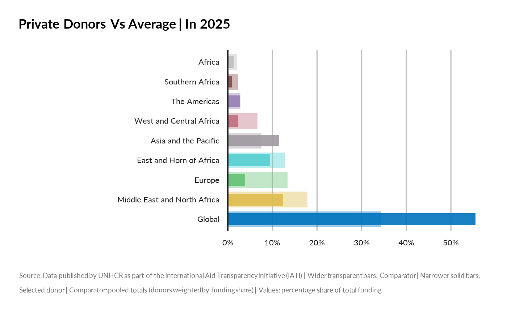
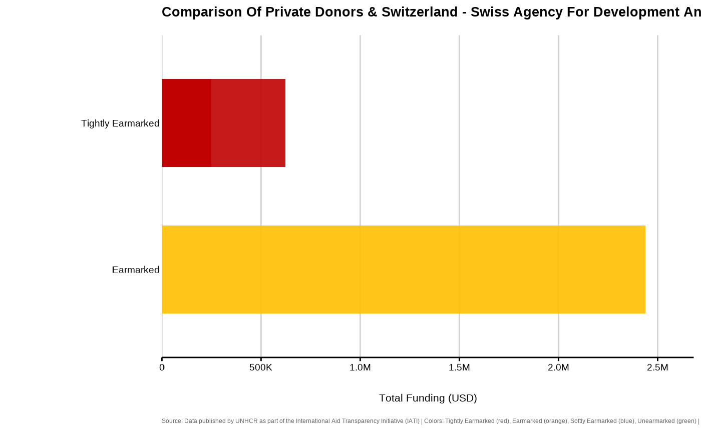

Creates an overlaid bar chart to compare funding profiles of donors based on a selected dimension (earmarking, region, or country). When only one donor is provided, a comparator is automatically added based on other donors.
Arguments
- donor_names
Character vector of donor names to compare (length 1 or more).
- by
One of "earmarking", "region", or "country". The dimension to compare.
- avg_method
If only one donor is supplied, how to compute the "others" comparator: - "mean_of_donors": Each donor counts equally, regardless of their total funding - "pooled": Donors are weighted by their share of total funding (larger donors have more influence)
- display_mode
Comparison mode: - "absolute": Compare absolute USD amounts (sum vs sum) - "relative": Compare percentage shares of total funding (profile vs average profile)
- year
Optional numeric/integer vector. Year(s) to filter on.
- unhcr_region
Optional character vector. Filter for UNHCR region(s).
- programme_lab
Optional character vector. Filter for programme name.
- iati_identifier_ops
Optional character vector. Filter for operation ID.
- ctr_name
Optional character vector. Filter for country name.
- top_n
Integer. The number of top categories to show when `by = "country"`.
Details
When `display_mode = "relative"` and a comparator is added: - Selected donor: Percentage share of its own total funding - Comparator: Average percentage share across other donors (using `avg_method`)
When `display_mode = "absolute"` and a comparator is added: - Selected donor: Absolute USD amounts - Comparator: Either: - With `avg_method = "mean_of_donors"`: Average donor size × average share - With `avg_method = "pooled"`: Summed totals across all other donors
The chart uses visual cues to distinguish series: - Wider transparent bars: Comparator - Narrower solid bars: Selected donor(s) - Colors represent categories within the dimension
Examples
# Compare Donor Profiles
## using mean
compare_donor_profiles(
donor_names = "Private donors",
by = "earmarking",
year = 2025,
avg_method = "mean_of_donors",
display_mode = "absolute"
)

compare_donor_profiles(
donor_names = "Private donors",
by = "earmarking",
year = 2025,
avg_method = "mean_of_donors",
display_mode = "relative"
)

## using pooled
compare_donor_profiles(
donor_names = "Private donors",
by = "earmarking",
year = 2025,
avg_method = "pooled",
display_mode = "absolute"
)

compare_donor_profiles(
donor_names = "Private donors",
by = "earmarking",
year = 2025,
avg_method = "pooled",
display_mode = "relative"
)

compare_donor_profiles(
donor_names = "Private donors",
by = "region",
year = 2025,
avg_method = "pooled",
display_mode = "relative"
)

compare_donor_profiles(
donor_names = c("Private donors",
"Switzerland - Swiss Agency for Development and Cooperation (SDC)"),
by = "earmarking",
year = 2025,
ctr_name = "Brazil")
